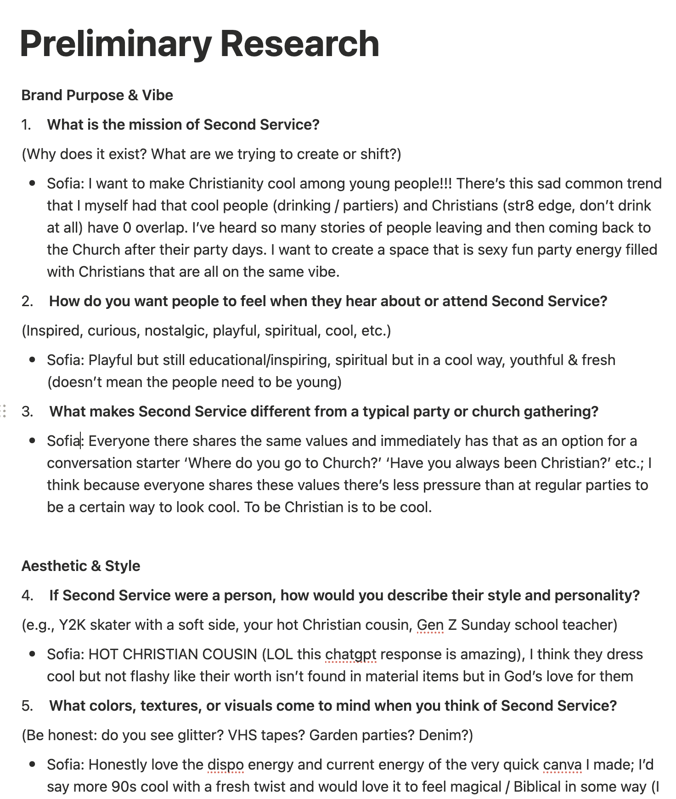

overview
Second Service was founded by a group of church friends who wanted to create a fun gathering outlet for young Christians in the city.
My role was to build an Instagram account from scratch with a consistent visual identity, organize and run engaging events that encouraged community connection, and capture photos and content to promote future events.
This project demonstrated how integrated digital and physical experiences can build authentic community engagement.
the problem
Second Service had no existing systems for outreach, content creation, or event management. The club lacked a visual identity and was not well-known in the community.
📱 No Brand Presence
The club lacked a logo, visual identity, and any sort of social platform presence. Needed brand guidelines and content strategy from scratch.
📉 Low Turnout
Prior events were seeing ~20 attendees due to limited awareness and fragmented outreach, signaling the need for clearer promotion.
📣 No Mainstream Communication
There was no centralized place to share event info and visuals - making discovery hard.
process & timeline
1. Initial Research
Reviewed similar church-based and club social accounts in the area & gathered qualitative data from interviews with club leaders.
2. Human-Centered Research Methods
Created a moodboard, user persona, and brand guidelines based off of the club leaders' visions in order to guide the design process.
Brand Direction
Retro, nostalgic, bright, and funky — chosen to signal warmth & low‑pressure gatherings. The palette and grainy textures nod to throwback print ephemera while bold type and blocks keep posts easily readable in‑feed.
3. Design
Made the logo in Canva, iterating on type, alignment, and scale to make the core brand visual.
Created post templates in Figma to systematize tone, rhythm, and visual identity before launch.
4. Instagram Account Launch & Event Execution
Launched Instagram account & ran outreach for event attendance, building a larger following & a central location for the club to share information.
impact

Purposeful Instagram Strategy + Community-Focused Events = Measurable Momentum
instagram analytics
Key Learnings
- Consistent brand system (type, color, templates) built recognition fast — 0 → 132 followers in ~3 months.
- Sequenced content (teasers → countdowns → day‑of → recap) lifted monthly views from 1.8K → 3.6K → 6.5K.
- People‑first photos beat graphics for saves/shares — recap albums drove the strongest continuing reach.